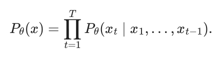
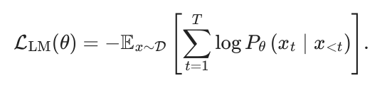
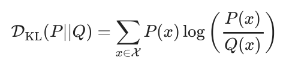
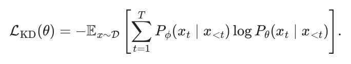

Appendix A. Definitions
This appendix includes all the definitions, symbols, and operations frequently used in the RLHF process and with a quick overview of language models, which is the guiding application of this book.
#A.1 Language Modeling Overview
The majority of modern language models are trained to learn the joint probability distribution of sequences of tokens (words, subwords, or characters) in an autoregressive manner. Autoregression simply means that each next prediction depends on the previous entities in the sequence. Given a sequence of tokens x = (x1, x2, … , xT), the model factorizes the probability of the entire sequence into a product of conditional distributions:

In order to fit a model that accurately predicts this, the goal is often to maximize the likelihood of the training data as predicted by the current model. To do so, we can minimize a negative log-likelihood (NLL) loss:

In practice, one uses a cross-entropy loss with respect to each next-token prediction, computed by comparing the true token in a sequence to what was predicted by the model.
Language models come in many architectures with different trade-offs in terms of knowledge, speed, and other performance characteristics. Modern LMs, including ChatGPT, Claude, Gemini, etc., most often use decoder-only Transformers [1]. The core innovation of the Transformer was heavily utilizing the self-attention [2] mechanism to allow the model to directly attend to concepts in context and learn complex mappings. Throughout this book, particularly when covering reward models in Chapter 5, we will discuss adding new heads or modifying a language modeling (LM) head of the transformer. The LM head is a final linear projection layer that maps from the model’s internal embedding space to the tokenizer space (a.k.a. vocabulary). We’ll see in this book that different “heads” of a language model can be applied to fine-tune the model to different purposes – in RLHF this is most often done when training a reward model, which is highlighted in Chapter 5.
#A.2 ML Definitions
- Kullback-Leibler (KL) divergence (DKL(P||Q)), also known as KL divergence, is a measure of the difference between two probability distributions. For discrete probability distributions P and Q defined on the same probability space X, the KL distance from Q to P is defined as:

#A.3 NLP Definitions
- Prompt ( x): The input text given to a language model to generate a response or completion.
- Completion (y ): The output text generated by a language model in response to a prompt. Often the completion is denoted as y ∣x. Rewards and other values are often computed as r(y ∣x) or P(y ∣x). Chosen Completion (yc): The completion that is selected or preferred over other alternatives, often denoted as ychosen. Rejected Completion (yr): The disfavored completion in a pairwise setting.
- Preference Relation ( ≻): A symbol indicating that one completion is preferred over another, e.g., ychosen ≻yrejected. E.g. a reward model predicts the probability of a preference relation, P(yc ≻yr ∣x).
- Policy ( π): A probability distribution over possible completions, parameterized by θ: πθ(y ∣x).
#A.4 RL Definitions
Reward ( r): A scalar value indicating the desirability of an action or
state, typically denoted as r.
Action ( a): A decision or move made by an agent in an environment,
often represented as a ∈A, where A is the set of possible actions.
State ( s): The current configuration or situation of the environment,
usually denoted as s ∈S, where S is the state space.
Trajectory (τ ): A trajectory τ is a sequence of states, actions, and
rewards experienced by an agent: τ = (s0, a0, r0, s1, a1, r1, . . . , sT, aT, rT).
Trajectory Distribution ((τ ∣π)): The probability of a trajectory under
policy π is P(τ ∣π) = p(s0) ∏tT=0 π(at ∣st)p(st+1 ∣st, at), where p(s0) is the prior
state distribution and p(st+1 ∣st, at) is the transition probability.
Policy ( π), also called the policy model in RLHF: In RL, a policy is a
strategy or rule that the agent follows to decide which action to take in a
Discount Factor ( γ): A scalar 0 ≤γ < 1 that exponentially down-weights
future rewards in the return, trading off immediacy versus long-term gain
and guaranteeing convergence for infinite-horizon sums. Sometimes
discounting is not used, which is equivalent to γ = 1.
Value Function ( V): A function that estimates the expected cumulative
reward from a given state: V (s) = E[∑t=0∞ γttrt ∣s0 = s].
Q-Function ( Q): A function that estimates the expected cumulative
reward from taking a specific action in a given state:
Q(s, a) = E[∑t=0∞ γttrt ∣s0 = s, a0 = a].
Advantage Function ( A): The advantage function A(s, a) quantifies the
relative benefit of taking action a in state s compared to the average
action. It’s defined as A(s, a) = Q(s, a) −V (s). Advantage functions (and
value functions) can depend on a specific policy, Aπ(s, a).
Policy-conditioned Values ([]π(⋅)): Across RL derivations and
implementations, a crucial component of the theory and practice is
collecting data or values conditioned on a specific policy. Throughout this
book we will switch between the simpler notation of value functions (
V , A, Q, G) and their specific policy-conditioned values (Vπ, Aπ, Qπ). Also
crucial in the expected value computation is sampling from data d, that is
conditioned on a specific policy, dπ (e.g., s ∼dπ and a ∼π(⋅∣s) when
estimating Es∼dπ,a∼π(⋅∣s)[Aπ(s, a)]).
Expectation of Reward Optimization: The primary goal in RL, which
involves maximizing the expected cumulative reward:
where ρπ is the state distribution under policy π, and γ is the discount
Finite Horizon Reward (J(πθ)): The expected finite-horizon discounted
return of the policy πθ, parameterized by θ is defined as:
where τ ∼πθ denotes trajectories sampled by following policy πθ and T is
On-policy: In RLHF, particularly in the debate between RL and Direct
Alignment Algorithms, the discussion of on-policy data is common. In
the RL literature, on-policy means that the data is generated exactly by
the current form of the agent, but in the general preference-tuning
literature, on-policy is expanded to mean generations from that edition of
model – e.g. a instruction-tuned checkpoint before running any
preference fine-tuning. In this context, off-policy could be data generated
by any other language model being used in post-training.
#A.5 RLHF Only Definitions
- Reference Model (πref): This is a saved set of parameters used in RLHF where outputs of it are used to regularize the optimization.
#A.6 Extended Glossary
- Synthetic Data: This is any training data for an AI model that is the output from another AI system. This could be anything from text generated from an open-ended prompt of a model to a model rewriting existing content.
- Distillation: Distillation is a general set of practices in training AI models where a model is trained on the outputs of a stronger model. This is a type of synthetic data known to make strong, smaller models. Most models make the rules around distillation clear through either the license, for open-weight models, or the terms of service, for models accessible only via API. The term distillation is now overloaded with a specific technical definition from the ML literature.
- (Teacher-student) Knowledge Distillation: Knowledge distillation from a specific teacher to a student model is a specific type of distillation above and where the term originated. It is a specific deep learning method where a neural network loss is modified to learn from the log-probabilities of the teacher model over multiple potential tokens/logits, instead of learning directly from a chosen output [3]. An example of a modern series of models trained with Knowledge Distillation is Gemma 2 [4] or Gemma 3. For a language modeling setup, the next-token loss function can be modified as follows [5], where the student model Pθ learns from the teacher distribution Pϕ:

In-context Learning (ICL): In-context here refers to any information
within the context window of the language model. Usually, this is
information added to the prompt. The simplest form of in-context
learning is adding examples of a similar form before the prompt.
Advanced versions can learn which information to include for a specific
- Chain-of-Thought (CoT): Chain-of-thought is a specific behavior of language models where they are steered towards a behavior that breaks down a problem in a step-by-step form. The original version of this was through the prompt “Let’s think step-by-step” [6].
[1]A. Vaswani et al., “Attention is all you need,” in Neural information processing
systems, 2017. Available: https://api.semanticscholar.org/CorpusID:13756489
[2]D. Bahdanau, K. Cho, and Y. Bengio, “Neural machine translation by jointly learning to align and translate,” CoRR, vol. abs/1409.0473, 2014, Available:
https://api.semanticscholar.org/CorpusID:11212020
[3]G. Hinton, O. Vinyals, and J. Dean, “Distilling the knowledge in a neural network,”
arXiv preprint arXiv:1503.02531, 2015.
[4]G. Team et al., “Gemma 2: Improving open language models at a practical size,”
arXiv preprint arXiv:2408.00118, 2024.
[5]R. Agarwal et al., “On-policy distillation of language models: Learning from self-
generated mistakes,” in The twelfth international conference on learning
representations, 2024.
[6]J. Wei et al., “Chain-of-thought prompting elicits reasoning in large language
models,” Advances in neural information processing systems, vol. 35, pp. 24824–
24837, 2022.